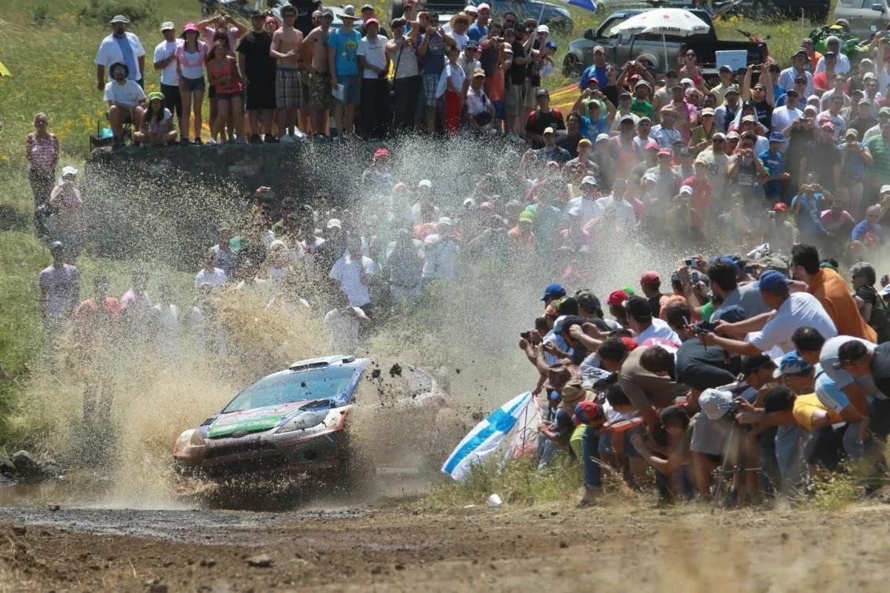
Route History of the Acropolis Rally Part 5: 2006-2013
Following the success of the 2005 Super Special, the Acropolis Rally was moved from Lamia to Athens. This meant that many of the rally’s best stages would not be an integral part of the event for years to come, with the rally using stages around Athens and the Loutraki region.
2006-2008: The event is moved to Athens
After the success of the 2005 SSS, the organisers opted to use the Olympic Stadium as the event’s Service Park, with the SSS being run twice, as the rally’s opener and closing stage. It wouldn’t be a success like the previous year, as higher ticket prices and the fact that it was a two-pass stage meant that not many chose to spectate. Many of the more “hard-core” fans who opposed the change of HQ decided not to attend the rally.
The stages themselves were rougher than the ones used in Lamia.
The original 2006 itinerary was quite different from the one actually used in the event. According to the event’s Rally Guide 1, there were supposed to be three stages in the Parnitha region, two of which were on Friday. No official stage names were released, so they’ll be referred to by their number.
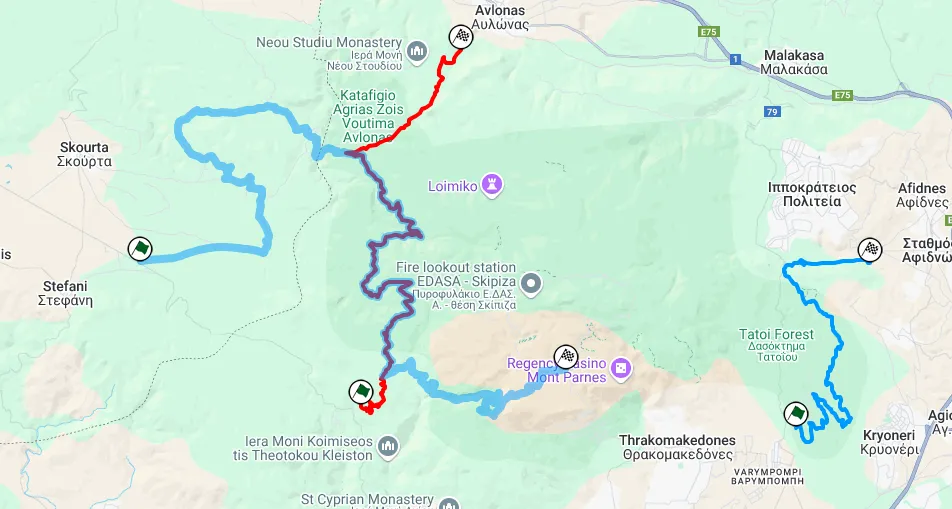
The three stages in Parnitha which were not used
SS3/6 was due to combine the Skourta stage and the old Parnitha stage. It would start from Skourta, with that high-speed section, and then turn right onto the old Parnitha route near Avlonas, becoming rougher and slower, with the finish being near the Parnitha Casino. The stage was set to be a monster 42km test.
SS4/7 would be on the east side of Parnitha, in Tatoi. It would use roads near the former Greek royal family estate. The start would be slow and sinuous but not so rough, becoming faster towards the end. The finish would be near Afidnes.
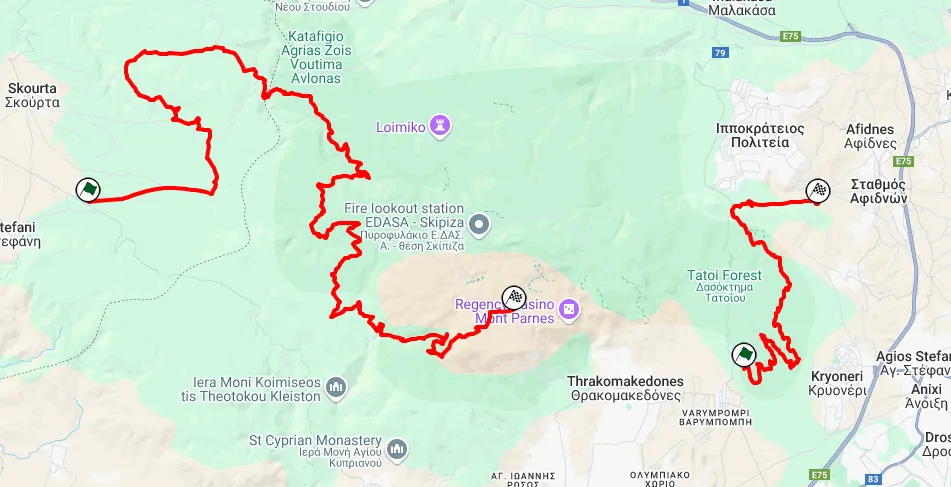
Map of SS3/6 and SS4/7
On Sunday, there would be a third stage in Parnitha. SS14/17 would start near Fyli and follow the old SS Parnitha route until the finish. It would use parts of SS3/6 in reverse.
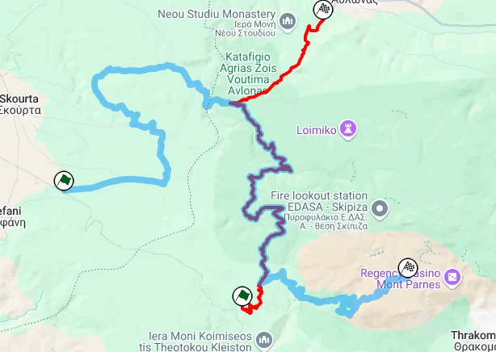
SS14/17 (red) and the shared parts with SS3/6 (blue)
However, due to environmental concerns, none of these stages would eventually be used as Parnitha is a protected national park. Instead, SS3/6 would be replaced by Skourta, using the parts that were allowed to be used by the forestry department. SS4/7 would be replaced by Thiva, which was only supposed to be used once on Sunday, and SS14/17 would be replaced by Avlonas, which was just Skourta in reverse. The whole stage would be used a total of four times, and the road would be destroyed by the end of the rally. Avlonas would be shortened by 1.45km due to the first two passes of Skourta damaging the surface.
On the other stages that were actually used, the Shakedown was obviously new, and was on the foothills of the Parnitha mountain. Imittos returned and used some of the older parts of the stage from the 80s. It was a rough stage, but definitely not as rough as back in the day.
Onboard of SS Imittos
Saturday would use stages west of Athens. Mandra would return for the first time since 1994, using a similar route, extended from the start. Kineta would also return, and would be a massive 37km stage. It would use parts of the classic stage, then turn onto the route of the 2000 Aghii Theodori stage, and finish near Pissia.
The last stage of the day, Psatha, was mostly brand new. It started from Psatha and then climbed uphill, with a mix of fast, more technical, and slow sections.
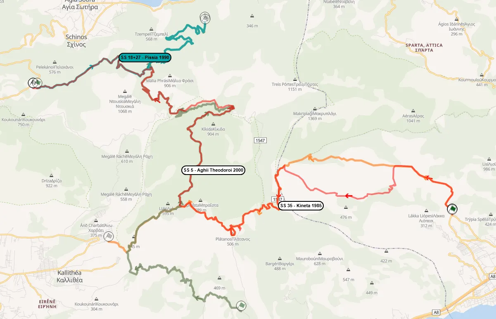
Kineta from 2006 (red) compared to Aghii Theodori 2000 (green), the classic Kineta (orange) and Pissia (petrol)
Rally-Maps.com
Sunday would use two repeated stages, as well as a second pass through the SSS.
Apart from the aforementioned Avlonas, Aghia Sotira would return and use parts of the Mandra stage in reverse. Those parts, used a total of four times, would be extremely rough, as if the stages weren’t rough already.
It was the first Acropolis Rally to use the cloverleaf format on all days.
For 2007, the rally would still be held in Athens, but the HQ would be relocated to the other side of Attiki, in Markopoulo. Before the rally, SS Imittos, which was scheduled to be used twice on Friday and Sunday, would be cancelled after a local municipality refused to permit the stage to be used. A new SSS in the Hippodrome would also not be without issues, as the race horse owners’ association wanted the organisers to cancel the stage on the eve of the rally, stating that it would impact the well-being of the horses in nearby stables. In the end, the stage would go on as planned.
Friday would see a new stage used, Schimatari. It was pretty sandy, and in places looked a lot like Rally Mexico. It included a big jump just after the start and was very slow and twisty. After a pass of Thiva and Aghia Sotira, which now used a fraction of the Mandra (renamed to Agia Triada) stage, the crews would head back to Markopoulo for another SSS next to the rally’s service park, which was vaguely similar to Estonia’s SSS in Tartu, and was generally well received by the drivers. In the afternoon loop, Schimatari, Thiva, and Agia Sotira would be used again.
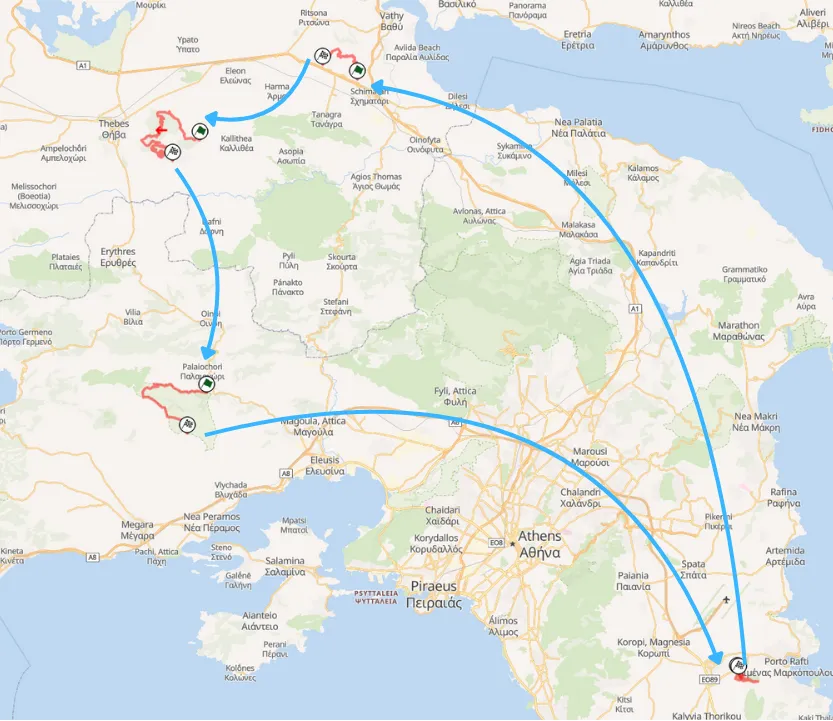
Leg 1 of the 2007 Acropolis Rally
Rally-Maps.com
Saturday saw the rally moved to the Loutraki area. SS Aghii Theodori returned after 7 years of absence, and was a monster 48.8km stage. It used parts of Kineta, then turned to a road never used before in the Acropolis, heading to Prathi, and then turning to the finish of the 2006 Kineta stage. It would continue past the tarmac and continue on the Pissia stage. It was very rough and used a variety of roads with varying levels of technicality and speed. After each pass through the stage, a remote service would follow in Loutraki.
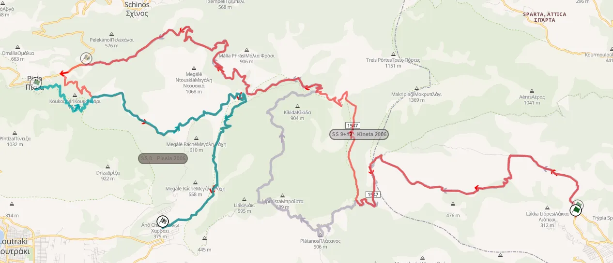
2007 Aghii Theodori compared to Kineta from the previous year and Pissia
Rally-Maps.com
Loutraki would be a new stage title. It would use the finish of the 80s Kineta stage in reverse and then follow the very technical and slow road used in the 2000 Aghii Theodori stage.
Agia Triada was just the Mandra stage, only in reverse, and it also returned to the old finish. Each loop was completed with an SSS in Markopoulo, one being the Olympic Properties and the other being the Hippodrome.
Sunday would see Avlonas and Assopia ran twice. Avlonas was shortened from the start and finish by 1.5km each, but followed the same route as 2006 other than that. Assopia used most of the Pili stage from 1998. These two were the rally's fastest stages, having close to 100km/h of average speed.
The rally had 65 punctures among WRC entries, such was the roughness of the Attiki and Loutraki stages.
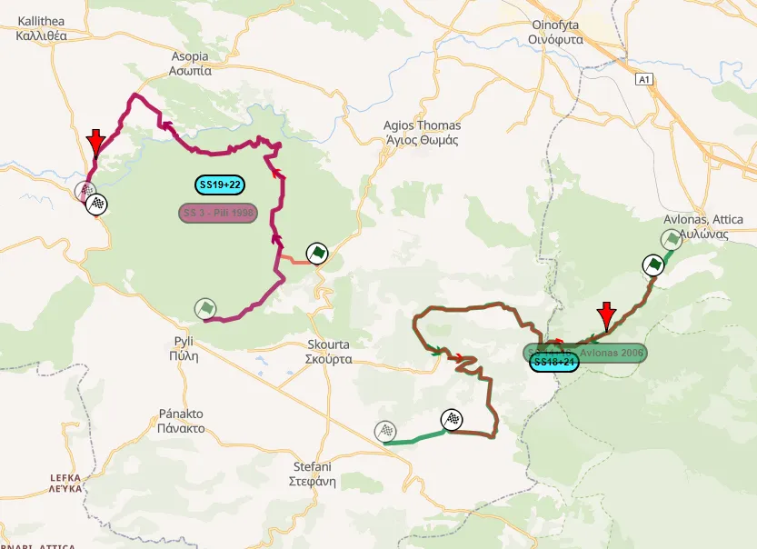
Assopia (left) compared to Pili and Avlonas (right) compared to the 2006 version
Rally-Maps.com
The rally would change HQs for the 4th year in a row for 2008, moving to the Tatoi military airport, after traffic and long liaisons impacted the Markopoulo HQ. A new SSS would be used, and was ploughed in the airport grass. It was… interesting.
The Shakedown was also new, and used the start of the stage which was not used in the Tatoi area.
Friday saw two loops of three repeated stages. Schimatari and Thiva were unchanged from 2007, and Psatha returned as the last stage of the loop.
Originally, there was going to be a stage in the Pikilo Mountain, to the west of Athens, in place of Psatha, but the stage was cancelled due to environmental concerns, again. Most of the stage is available on street view on Google Maps.
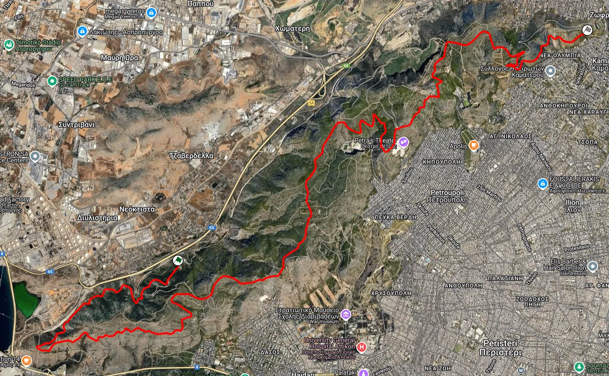
Map of the unused SS Pikilo
For Saturday, Aghii Theodori would be split into two stages, with Aghii Theodori now having its finish before the tarmac near Pissia, and SS Pissia using the latter half of the stage, replacing Loutraki. After these two stages, Agia Triada would also be in the itinerary in the same configuration as 2007.
Sunday would see two loops of three repeated stages + Tatoi. Assopia and Aghia Sotira were the same as 2007, and Avlonas was due to be the same. However, due to more environmental concerns, as the stage passed from Parnitha and was shortened by about 5km from the start.
2009, 2011-2012: New base in Loutraki, and use of remote services
For 2009, the event would change HQ yet again. Just a few days after the finish of the 2008 rally, the organisers stated that they were looking to relocate the event elsewhere. Five proposals were shared, with Loutraki beating out Kamena Vourla, Itea, Lamia, and Chalkida. Weirdly, despite the Acropolis being held in Athens these past three years, the ceremonial start would not be in the city center in any of them.
The route was revealed in November of the same year, and made full use of the new remote service regulations. For the first time since 2005, the event would head as north as Itea, for the Bauxites and Drosohori stages. Saturday featured three brand new stages in the Peloponnese, and Sunday was entirely in Loutraki. Thursday's shakedown was also new, and was in Loutraki
Friday would see the cars start from Loutraki, head to Itea, and then back to Loutraki. There would only be one repeated stage. SS1 Harvati was a mix of stages used in the recent past, and was essentially a combination of the Pissia and Harvati stages from the 90s. Most of the stage was used under the Aghii Theodori name in 2007. A first pass of Thiva would then follow, before remote service in Itea. SS3 Evangelistria was cancelled before the event for “reasons of force majeure”.
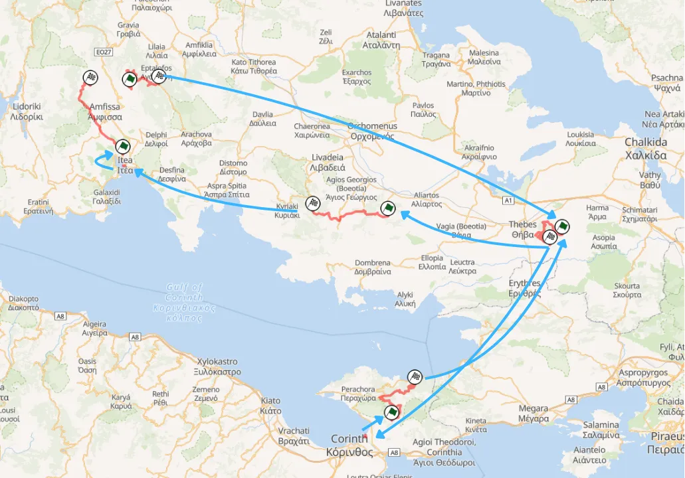
Map of Leg 1 of the 2009 Acropolis Rally
Rally-Maps.com
After a first pass of Bauxites, Drosohori would be used in a new configuration, extended from the old start and using a new section, linking it to the old Gravia finish. Αfter these two stages, the crews would head to Thiva for a second pass of the stage, and then back to Loutraki for service.
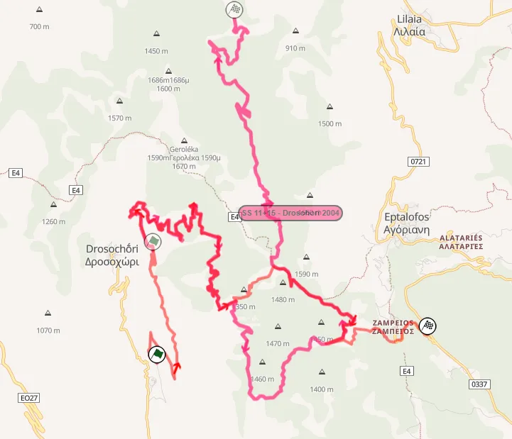
Drosohori (red) compared to the 2004 version (pink)
Rally-Maps.com
Saturday would see three new stages, Klenia-Mycenae, Ghymno and Kefalari.
Parts of Klenia were used in 1991, but the start was new. It would use a medium-wide to wide technical road, which passed next to olive groves. After that, it would become faster and wider before again becoming narrow as it passed next to fields. Those very narrow sections were exceptionally rough. The end of the stage would be fast and rough, with the road constantly changing from narrow to wide. Sebastien Loeb had the biggest accident of his career here.
Ghymno was the roughest stage of the new ones. It was a very narrow and technical test and an absolute car-breaker. The last 9.5km of the stage were exceptionally rough and rocky.
The last stage of the loop, Kefalari, was initially uphill and generally fast. After 6km, the stage passed through an open plateau with nice spots for spectators. After re-entering the forest, it became slow, narrow, and technical, with many rocks. The end of the stage was downhill with medium-speed and high-speed sections.
Onboard of SS Kefalari
Onboard of SS Klenia - Mycenae
Sunday would have three stages, two of which would be repeated. Whereas Loutraki was the same as 2007, Aghii Theodori was more like Kineta from 2006, but with a different ending. The ending was technical and slow at first, but later, it widened, and the stage became faster.
New Pissia was the only one-pass stage of the day and would be the first 11.7km of the Harvati stage, the rally’s opener.
The Acropolis would be absent from the 2010 calendar, yet again due to the FIA trying out another new rotation system.
For 2011, the rally would again be held in Loutraki, but would see some significant changes on Friday.
Firstly, the rally's Ceremonial Start would be in the Athens City Center for the first time since 2003. The rally proper would start on Friday with 6 stages, only one of which, Thiva, would be repeated.
Instead of heading to Itea, the rally would move to Kamena Vourla for Friday’s remote service, meaning Eleftherohori and Elatia would return to the rally for the first time since 2005.
SS2 Elatia was a massive 39km, and was a combination of the Elatia-Zeli stage, and the first half of the Rengini stage from 2002. SS3 Eleftherohori would be used in its classic configuration, with the crews then heading to Rengini, which would be the classic Elatia Rengini test, starting from Rengini, identical to 2005.
After a second pass of Thiva, SS Mavrolimni was the last of the day. The name might have been new, but it was just Harvati from 2009, in reverse.
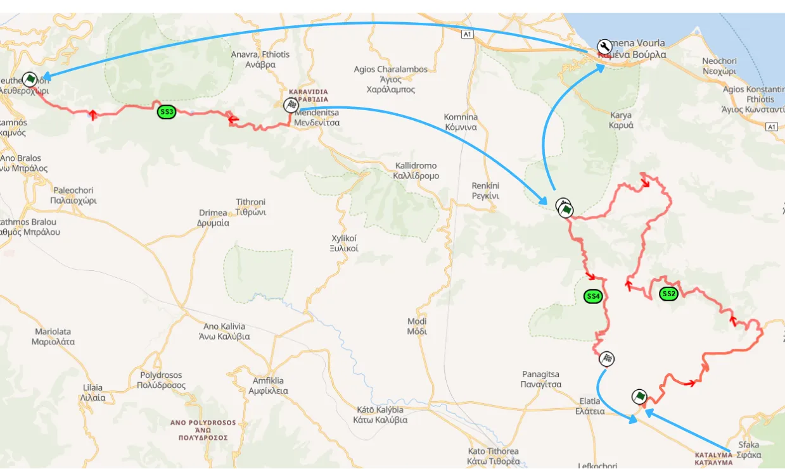
Map of the Kamena Vourla loop of the 2011 Acropolis Rally
Rally-Maps.com
Saturday would be the same as 2009, with the only difference being that Klenia would bypass some tarmac sections and use some detours passing next to fields. Kefalari would have a technical 6km section removed.
Nea Politia would be a one-pass stage which rounded off the day. It was a night stage, the first since 1985 (?), and used fast and wide roads up until the midpoint, before turning onto tarmac for about 3km and then using the Loutraki stage from 2009 in reverse. The stage was also tried earlier in the year for the first time, in a local rallysprint, with the only difference being that the stage would pass through the firebreak parallel to the tarmac road.
Sunday would again see 3 stages, two of which were repeated. Aghii Theodori had the Kineta section removed, with the stage now starting from the old Kineta finish (as did Nea Politia) and then continuing on, joining the old stage route from 2009 at 4.3km.
New Pissia was the same as 2009, and the first-ever Acropolis Rally Power Stage was New Loutraki, which used the first 4.3km of Aghii Theodori. Overall, that section was used four times, all in the same direction, in 2011.
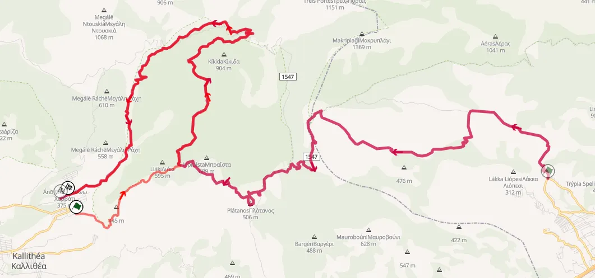
2011 Aghii Theodori (red) compared to the 2009 version (maroon)
Rally-Maps.com
For 2012, the event would return to Itea on Friday, and would see some changes. For the first time since 1997, there would be over 400km of stages.
There would be a new Shakedown, using the last 6.2km of the Aghii Theodori test. The rally proper started on Thursday, not Friday, with the 25.24km Kineta stage in the afternoon. Originally, the stage was supposed to be held at night, but that was later changed to the afternoon. The first 14.3km would be the same as 2006, with the stage following the Nea Politia route from the year prior.
Friday saw three loops of seven stages, with the crews starting from Loutraki, heading to Itea, and then back to Loutraki.
Aghia Marina was the day’s opener and was Mavrolimni in reverse. The finish was extended to a dried river and featured a steep downhill section that was fast and technical.
After a pass of Thiva, there would be another stage in Viotia, Elikonas. It wouldn’t use any parts of the 90s or 80s stages, instead being a slightly different version of the Kyriaki stage from 1997. It was pretty rough and technical, but rain made the stage more muddy than anything else.
Following service in Itea, the familiar Bauxites and Drosohori stages would follow, before another remote service. The last loop of the day featured re-runs of Bauxites, Elikonas and Thiva.
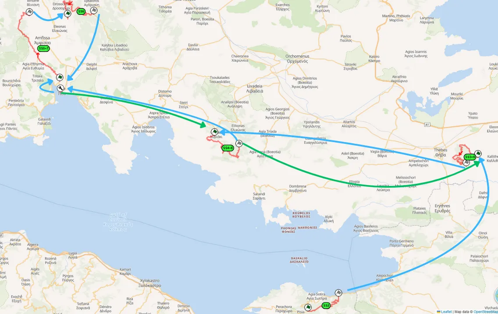
Map of Leg 1 of the 2012 Acropolis Rally
Rally-Maps.com
For Saturday, Klenia and Kefalari would remain the same, and Gymno would see the roughest parts of the stage removed. There would be a new stage in the area, Ziria.
Ziria was relatively fast, going uphill with a section with many hairpins, and then passed through an open plateau on a high speed section, and then headed downhill.
Sunday would be identical to the one from 2011, with Aghii Theodori, Pissia and New Loutraki.
Onboard of SS Ziria
2013: Rally Loutraki
Remote services were discontinued in 2013. That meant the rally would not visit Itea or Kamena Vourla but would be entirely in Loutraki and the Peloponnese.
This meant that the rally shrunk by about 100km, being just 306km long.
Friday would feature just two stages as andreturn to the old Shakedown. The monster 47.7km Kineta-Pissia stage combined Kineta from 2012 with the Aghii Theodori and Pissia stages.
The second stage was Kineta, same as 2012, and would be held at night.
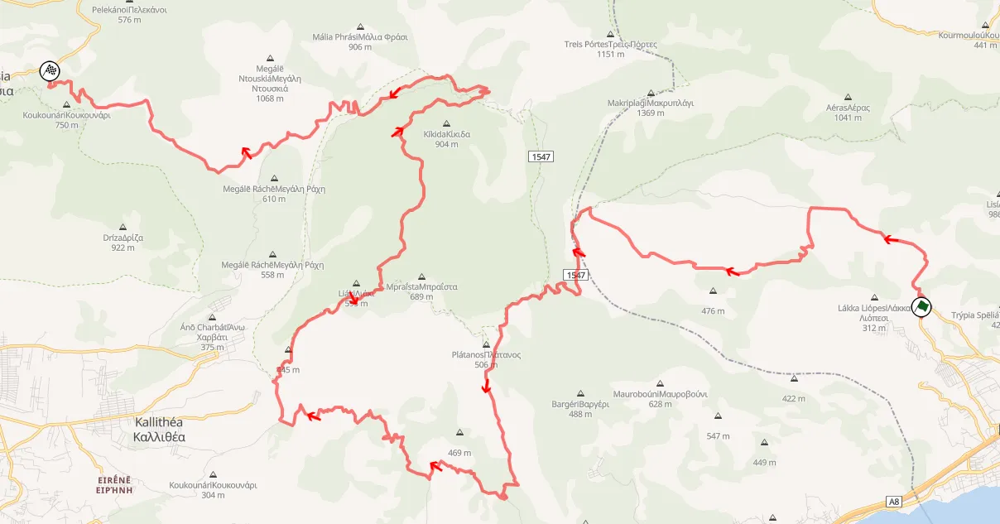
Map of Kineta - Pissia, using most of the roads in the Loutraki area
Rally-Maps.com
Saturday was the same as 2012, with Klenia, Ghymno, Kefalari and Ziria used in identical configurations.
Sunday was again in Loutraki, with two passes through SS Loutraki and SS Pissia.
Loutraki was basically the 1999 Aghii Theodori stage extended slightly, combining Nea Politia and Aghii Theodori from 2011 and 2012. Pissia was the same as 2011, only in reverse.
Many sections in the Loutraki area were used more than twice, with many of the stages using the same sections as others, either in reverse, or in the same direction. These two days were reminiscent of a practice done by the Rally Mexico organisers, and it was not something enjoyed by many.
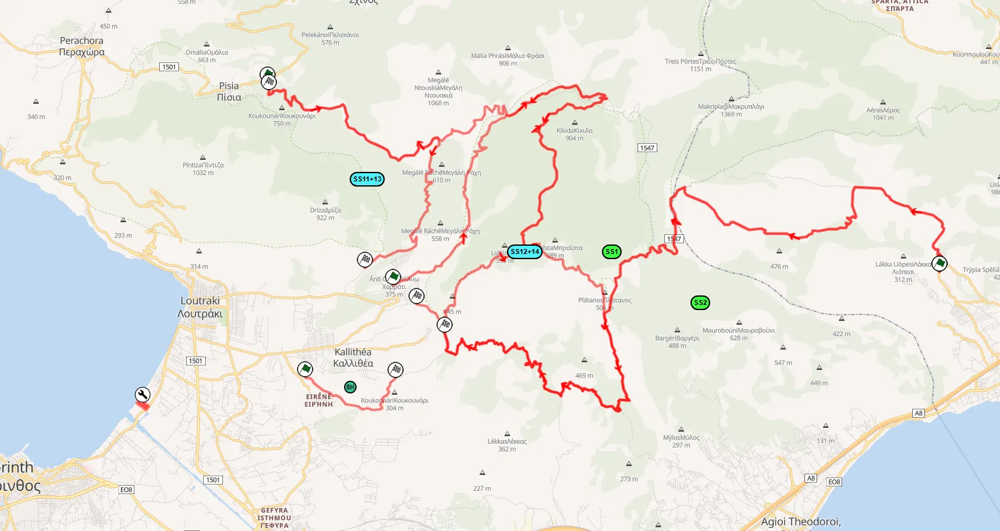
All of the stages used in the Loutraki region in 2013
Rally-Maps.com
For 2014, the rally would be off the WRC calendar, and instead be in the ERC. This was due to the rally, and Greece as a whole, not being financially capable to host a WRC event.
Stages used the most from 2006 to 2013
Agioi Theodori: 5 times
Loutraki: 5 times
Pissia: 5 times
Kefalari: 4 times
Klenia - Mycenae: 4 times
Percentage of entries that finished the rally
2006: 82.1%
2007: 76.6%
2008: 70.0%
2009: 71.1%
2011: 83.3%
2012: 59.3%
2013: 63.0%
Percentage of sections used more than twice in the rally from 2006 to 2013
2006: 39.3%
2007: 4.1%
2008: 1.5%
2009: 0%
2011: 14.4%
2012: 8.5%
2013: 25.5%